> 워터파크소개 > 추천 핫플레이스
추천 핫플레이스
- 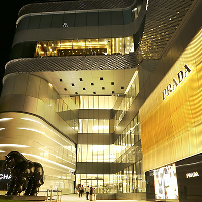
- 쇼핑롯데 프리미엄 아울렛 김해점
- 롯데 프리미엄 아울렛 김해점은 46,280㎡ 의 규모로 경남, 부산지역 최대 규모 아울렛입니다. 320여개의 브랜드 상설매장과 5300여대의 넓은 주차장을 보유하고 있으며 또한 30여개의 식당가, 어린이를 위한 플레이타임, 가족, 연인을위한 주말 이벤트 등 다양한 볼거리를 제공하고 있습니다.
- 경상남도 김해시 장유로 469
- 055-900-2500
-
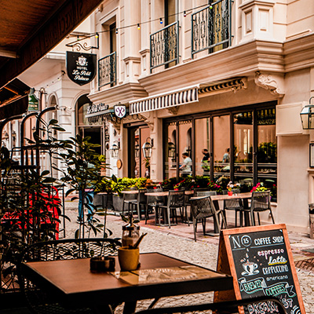
- 먹거리장유 율하 카페거리
- 각종 프랜차이즈 커피점이 줄지어 있고 바로 앞에는 율하 유적공원이 있습니다. 카페와 식당 그리고 하천과 공원이 있어 데이트장소로 좋은 곳입니다.
- 율하3로 91번길
- 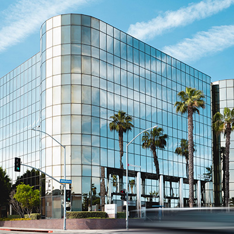
- 쇼핑김해 부원역 복합단지 - 아이스퀘어
- 경남지역 최초이자 유일한 복합단지. 특급호텔, 롯데시네마, 롯데마트, 고품격휘트니스, 사우나, 수영장, 오피스*금융센터, 메디컬*클리닉센터, 유니클로, 탑텐 등 초대형 쇼핑몰을 갖추고 있으며 축구장 크기의 야외공원과 유럽형 야외 테라스 스트리트를 갖춘 초대형 복합단지입니다.
- 경상남도 김해시 가락대로 2352 아이스퀘어
- 055-338-1000
- 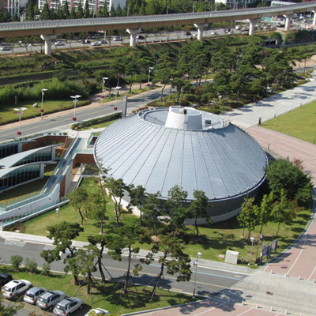
- 볼거리대성동고분박물관
- 고분박물관은 유물중심의 전시보다는 입체모형과 영상자료, 실물 크기의 무덤복원, 금관가야인의 모습과 생활상 복원,무사들의 복장 등 다양한 보조자료를 통해 고대의 구야국과 금관가야의 사회와 문화상을 일반인이 재미있고 알기 쉽도록 구성되어있는 박물관입니다.
- 경상남도 김해시 봉황동 253
- 055-330-3589
- 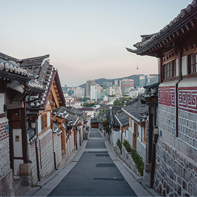
- 체험김해 한옥체험관
- 황세장군과 여의낭자의 순애보와 우륵의 가야금 소리가 귓전에 들릴듯한 곳. 한옥체험관은 무료입장으로 김해 한옥 체험관에서 한국 전통 문화를 체험하실 수 있습니다. 한옥 체험관에서 얻는 경험은 관광객들에게 아주 훌륭한 추억으로 남을 것입니다.
- 경상남도 김해시 봉황동 425-13
- 055-322-4735~8
- 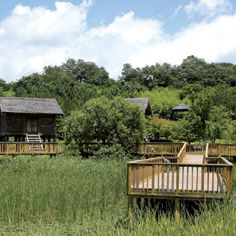
- 볼거리봉황동 유적지
- 사적 제2호. 철기시대 초기의 유적으로, 높이가7m, 동서의 길이 약130cm, 남북의 너비 약 30m의 낮은 언덕 위에 이루어져 있습니다. 한국 선사시대의 유적지 중에서 학술적 가치가 높은 유적입니다.
- 경상남도 김해시 봉황동 253
- 055-330-3589
- 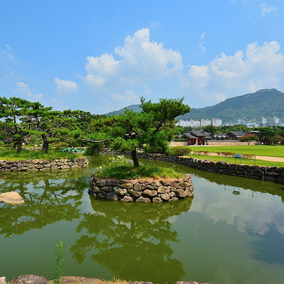
- 볼거리수로왕릉
- 김해의 상징적 문화유적으로서 가락국(AD 42~532년) 시조대왕의 수로왕릉을 찾아볼 수 있습니다. 김수로는 김해 김씨, 허씨, 인천 이씨의 시조이며 가락국을 창건한 수로왕을 모신 왕릉입니다. 수로왕은 알 중에서 맨 처음 나왔다 하여 "수로"라는 이름이 붙여졌다 합니다.
- 경상남도 김해시 서상동 312
- 055-330-3589
- 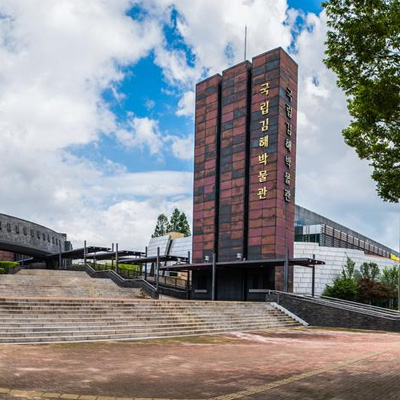
- 볼거리국립 김해박물관
- 대가락국의 건국설화가 깃든 구지봉 기슭에 자리 잡은 국립김해박물관은 가야의 문화재를 전시하고 있으며, 아울러 부산.경남 지역의 선사시대의 문화상과 가야의 성장 기반이 된 변한의 문화유산을 전시하고 있습니다.
- 경남 김해시 가야의 길 190
- 055-325-9332
- 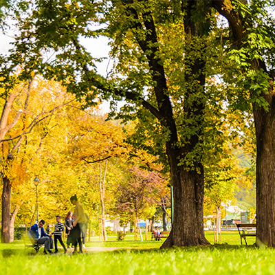
- 볼거리연지공원
- 연지 호수를 중심으로 만들어진 도심속의 호수공원입니다. 다양한 경관과 함께 여러가지 분수, 워터스크린 레이져쇼를 감상할 수 있는 곳입니다.
- 경남 김해시 금관대로 1368번길 7
- 055-328-6152
- 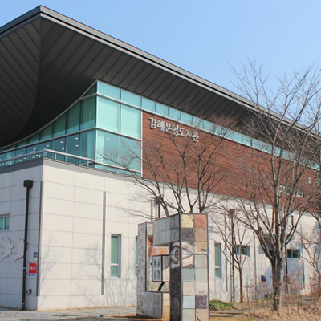
- 볼거리김해분청도자관
- 가야시대부터 조선시대에 이르기까지 찬란했던 김해도자기의 전통성을 계승, 발전 시키기 위해 설립된 도자기 박물관입니다.
- 경남 김해시 진례면 진례로275-35
- 055-345-6037~7
- 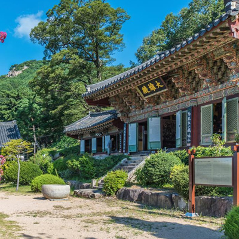
- 볼거리은하사
- 김해의 은하사는 가락국 김수로왕 때 창건한 사찰로 알려져 있습니다. 은하사는 김해의 명산 신어산을 병품처럼 두른 멋진 자리에 들어서 있어 경관이 아름다우며, 진입로의 소나무숲이 일품인 사찰입니다. 이런 아름다운 경관 덕에 '달마야 놀자'라는 영화가 이 은하사를 주무대로 촬영되기도 했습니다.
- 경남 김해시 삼방동 882
- 055-337-0101
- 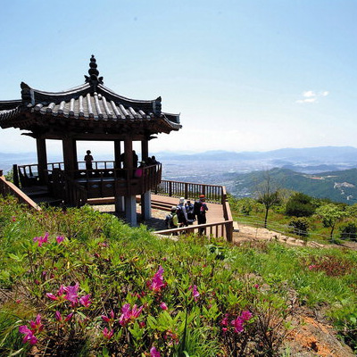
- 볼거리신어산
- 신어산은 해발634m로 그리 높지 않은 산이지만 산행 코스가 아기자기해 시민들의 사랑을 받고 있습니다. 등산시 김해시를 한눈에 내려다보며 산을 오르게 되어 있으며, 봄이면 철쭉 가을이면 억새가 멋진 경관을 만듭니다. 산행 시간은 약 4시간 정도입니다.
- 경남 김해시 삼방동